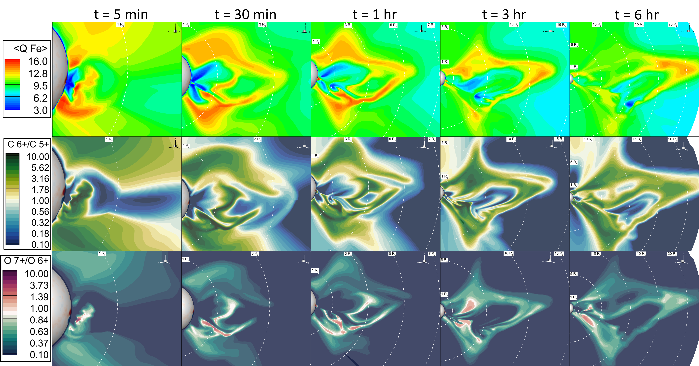
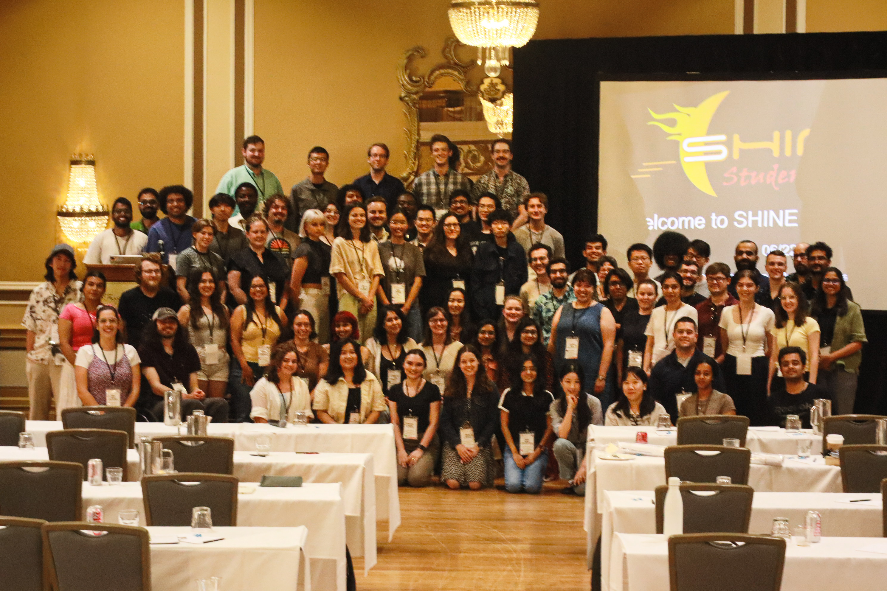

About Me

My research focuses on how we can utilize multiple types of observations and modeling to connect observations from the low solar corona through the heliosphere to those made near 1 AU. I focus on eruptive events and their pre-eruptive structures to improve space weather models.
My expertise lies in the intersection of observations and modeling, and how we can connect domains that are spatially very distant.
Outside of work, you will likely find me in a ballet studio, either taking class and rehearsing or teaching. I also love to knit (most likely you will see me in a hand-knit item) and reading!
Education:
Ph.D. in Climate and Space Sciences from the University of Michigan
Thesis title: Non-equilibrium ionization and spectroscopic modeling of coronal mass ejections
B.Sc. in Physics and Astronomy from the University of Maryland
Graduated with high honors in Physics and high honors in Astronomy
CME Modeling

During my Ph.D., I simulated the April 9th, 2008 CME ("Cartwheel CME") with the Alfven Wave Solar atmosphere Model (AWSoM; van der Holst et al. 2014, 2022). This is the first CME that includes a self-consistent calculation of the non-equilibrium ionization charge states throughout the simulation domain and in the EUV spectral synthesis.
AWSoM Comparison with Hinode/EIS Observations
In this work, we used the high-resolution Hinode/EIS observations to compare with the synthetic NEI EUV spectra to understand how well AWSoM captures CME thermodynamics at 1.1 Rs. Our main conclusions include:
AWSoM's thermodynamics compare well with observables at 1.1 Rs.
The inclusion of NEI effects is extremely important for CMEs, due to their rapid changes in density and temperature.
See Wraback et al. 2025a for more information!
Energy Budget Evolution
We continue to propagate the CME through the heliosphere to understand how, where, when, and why energy is being transferred in the CME, especially in regions where we lack observations (i.e. "the Middle Corona"). Our main conclusions include:
See Wraback et al. 2025b for more information!
Charge State Evolution
In this final paper of the series, we investigate the charge state evolution and how the ionization and recombination rates are affected by the energy transfer discussed in Wraback et al. 2025b. Our main conclusions include:
See Wraback et al. 2026 for more information!
Coronal Cavities
In my postdoc, I am investigating coronal cavities using ground-based and space-based observatories and MHD modeling. Currently, I am using the DKIST/CryoNIRSP data to measure the Stokes V in the coronal cavity and prominence plasma (paper in preparation for submission), as well as prepare for UCoMP to come back online and next-generation ground-based observatories, like COSMO.
Publications
Wraback, E.M., Manchester, W.B., Landi, E., \& Szente, J. 3D Non-Equilibrium Ionization and Spectroscopic Modeling of Coronal Mass Ejections III - Charge State Evolution. (2026) ApJ. 996, 65. doi:/10.3847/1538-4357/ae1a7a
Wraback, E.M., Manchester, W.B., Landi, E., & Szente, J. 3D Non-Equilibrium Ionization and Spectroscopic Modeling of Coronal Mass Ejections II - CME Energy Budget. (2025) ApJ. 995, 105. doi:10.3847/1538-4357/ae18a1
Wraback, E.M., Landi, E., Manchester, W.B., & Szente, J. 3D Non-Equilibrium Ionization and Spectroscopic Modeling of Coronal Mass Ejections I - Comparison with Hinode/EIS Observations. (2025). ApJ 980, 30. doi:10.3847/1538-4357/ada7e8
Wraback, E.M., Landi, E., & Manchester, W.B. Using the Cartwheel CME to Predict Off-Limb Observations of CMEs for New and Upcoming UV and EUV Spectrometers. (2024). ApJ 970, 182. doi:10.3847/1538-4357/ad6d58
Wraback, E.M., Landi, E., & Manchester, W.B. EIS Spectral Atlas of Cool Prominence Material in CME Core. (2024). ApJ. 970, 182. doi:10.3847/1538-4357/ad625f
Wraback, E.M., Hoffmann, A.P., Manchester, W.B., Sokolov, I.V., van der Holst, B., \& Carpenter, D. Simulating Compressive Stream Interaction Regions during Parker Solar Probe's First Perihelion using the Stream-Aligned Magnetohydrodynamics. (2024). ApJ. 962, 2. doi:10.3847/1538-4357/ad21fd
Service

Teaching:
Outreach:
Equity & Inclusion:
Contact
Please contact me! I am always looking for new collaborations and opportunities.
Email: ewraback@ucar.edu